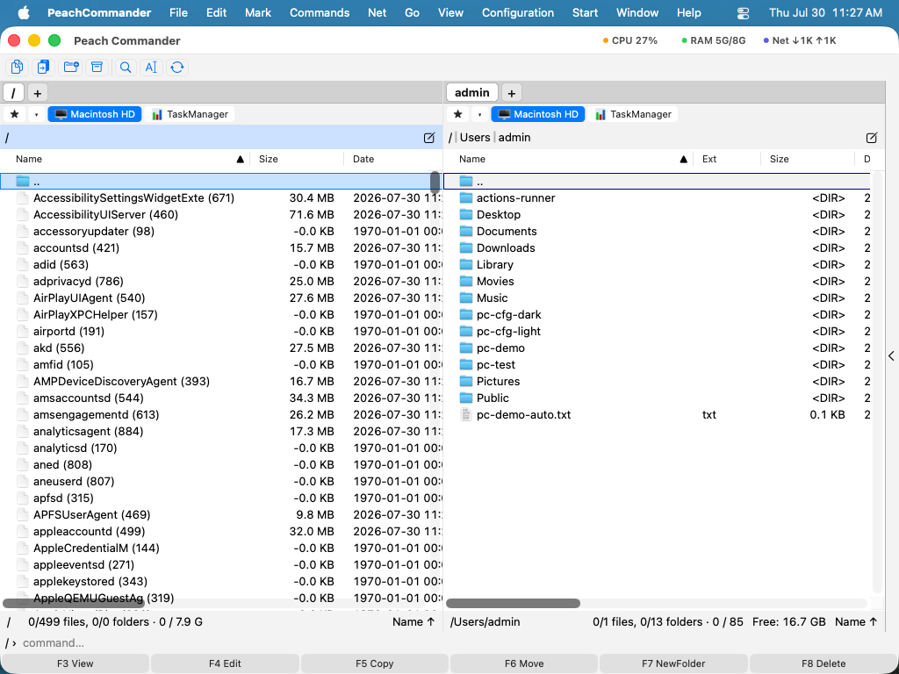

Task Manager
Плагін Task Manager перетворює запущені процеси вашого Mac на теку, яку можна переглядати. Він з'являється як диск TaskManager у смузі дисків; відкрийте його, і кожен процес стане рядком, який ви можете сортувати, досліджувати як файл чи завершувати — тими самими клавішами, які ви вже використовуєте для файлів. Це плагін, тож ви можете вимкнути чи вилучити його в Конфігурація ▸ Плагіни….
Відкриття
- Клацніть запис 📊 TaskManager у смузі дисків (він розташований одразу після вашого завантажувального диска).
- Панель заповнюється одним рядком на кожен запущений процес. Назва кожного рядка — це назва процесу, за якою йде його PID, наприклад
Finder (462).

(Малюнок: запущені процеси, показані як список файлів, який можна сортувати та з яким можна діяти.)Що означає кожен стовпець
Поряд зі звичайними стовпцями Розмір (пам'ять) і Дата (час запуску) Task Manager додає стовпці процесів:
| Стовпець | Значення |
|---|---|
| PID | Ідентифікатор процесу |
| CPU % | Нещодавнє використання процесора (з'являється після другого оновлення) |
| Threads | Кількість потоків |
| State | R працює · S спить · T зупинено · Z зомбі · I простоює |
| User | Власник |
| PPID | Ідентифікатор батьківського процесу |
| Command | Повний командний рядок |
Сортуйте за будь-яким стовпцем (наприклад CPU % чи Розмір/пам'ять), так само як у звичайній теці.
Дослідження чи завершення процесу
- Переглянути (F3) показує звіт Інформація про процес: назва, PID, батьківський, користувач, стан, потоки, пам'ять, CPU, час запуску, шлях до виконуваного файлу та повний командний рядок.
- Видалити (F8) завершує процес. Перше видалення надсилає коректне завершення (SIGTERM); повторне видалення процесу, що все ще працює, підвищує до примусового завершення (SIGKILL). Плагін ніколи не націлюється на PID 1.
Примітки
- Основні деталі (PID, батьківський, користувач, стан) читаються для кожного процесу, як у
ps. Пам'ять, потоки та CPU можна прочитати лише для ваших власних процесів; інші процеси показують ці стовпці порожніми (вони потребують підвищених привілеїв, що буде додано пізніше). - CPU % — це зміна між двома вибірками, тож він порожній, доки панель не оновиться вдруге (панель оновлюється приблизно кожні дві секунди).
- Список доступний лише для читання, окрім завершення процесу — ви не можете копіювати в нього файли.